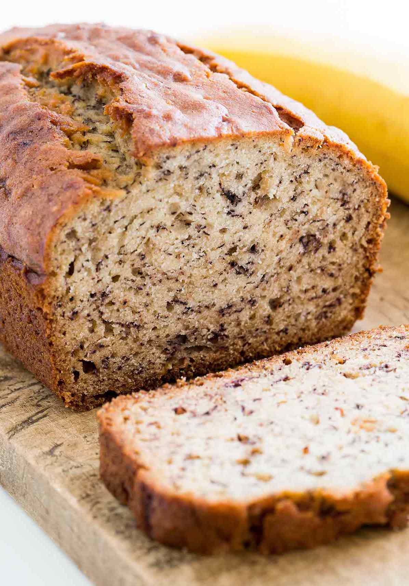

Tried-and-True Banana Bread
Yield
1 loaf
Time
30 min

This is one of the best ways to use up your over-ripe bananas. The key to this recipe is making sure the eggs, bananas (if frozen) and butter have thawed to room temperature. Freshly baked is the best time to eat, but when I don't have guests to share it with, I just freeze the rest as plastic-wrapped slices. Then when you're ready to have a slice, just reheat from frozen at 225℉ for 6 minutes!
Ingredients
- ½ cup butter (room temp)
- 1 cup white sugar
- 2 large eggs (room temp)
- 1 cup very ripe mashed bananas (~3-4 bananas)
- 1 tsp vanilla
- 2 cups all-purpose flour
- 1 tsp baking soda
- ½ tsp baking powder
- ½ tsp salt
- 1 cup chocolate chips / chopped walnuts (optional)
Preparation
- Preheat oven to 350℉. Grease loaf pan.
- Cream butter and sugar until smooth and combined.
- Add in eggs (one at a time), beating until smooth.
- Mix in mashed bananas and stir in vanilla.
- Whisk together dry ingredients and chips / nuts.
- Stir in above, until just combined.
- Pour into load pan, and bake for 50-60 minutes or until toothpick comes out dry.
- Cool in pan for 10 min. before serving. Enjoy!